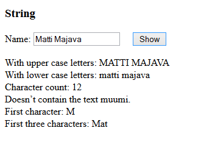

Make a program, that asks for a text string (line of text), and tells information about the text string.
Sample output for shown input:

HINTS:
The program
- shows it with "ALL CAPS" using toUpperCase() and with "all small letters" using toLowerCase(),
- tells how many characters are there (length, includes also all spaces)
- tells, whether the input string contains the word 'muumi' (Finnish for the moomin fairy tale character) using the method indexOf()
- tells the first character using charAt().
- tells which ones are the first three characters using subStr().
Submit a link to your code (myy or jsbin).